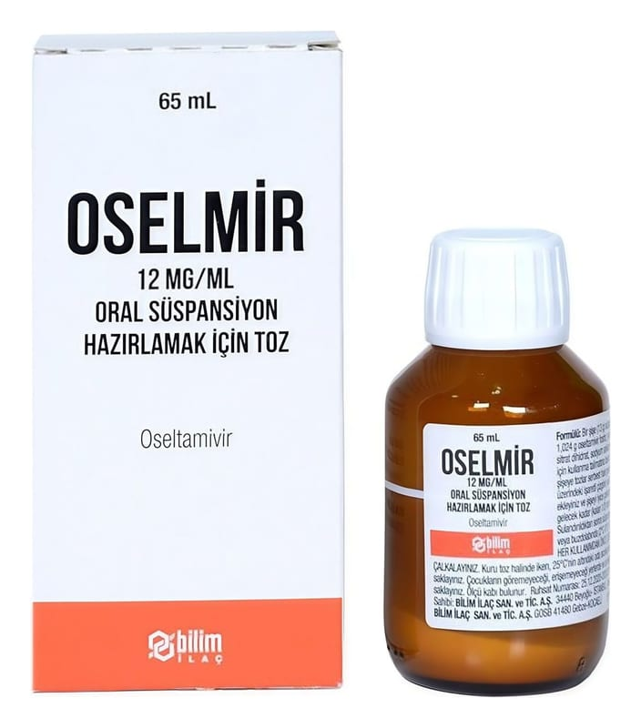

Oselmir 12 mg/ml Oral Süspansiyon Hazırlamak İçin Toz, 65 ml

Ne için kullanılır
KT · Bölüm 1OSELMİR’in etkin maddesi oseltamivirdir.
OSELMİR “nöraminidaz inhibitörleri” denen bir ilaç grubuna dahildir. Bu ilaçlar grip virüsünün vücudun içinde yayılmasını engeller. Bu ilaçlar, grip virüsü enfeksiyonu belirtilerini dindirir veya engeller.
OSELMİR, 12 mg/mL oral süspansiyon hazırlamak için toz, beyaz ile açık sarı renkte granüller veya küme şeklinde granüller halindedir.
Kutuda ayrıca bir oral doz şırıngası (doğru dozda ilacı ağız yoluyla vermek için) ve 5 mL’lik ölçü kaşığı bulunur.
OSELMİR, yetişkinler, ergenler, bebekler ve 1 yaşın altında olup 2 haftadan daha büyük yenidoğanlarda grip (influenza) salgını sırasında tedavi için kullanılır. 2 haftadan büyük yenidoğanlarda tedaviye grip belirtilerinin görüldüğü ilk 2 gün içinde başlanmalıdır.
OSELMİR aynı zamanda yetişkinler, ergenler, çocuklar ve 1 yaş veya üstündeki bebeklerde grip (influenza) salgını sırasında gribin önlenmesi için kullanılır.
OSELMİR, erken doğan (prematüre) ve 2 haftalıktan küçük bebeklerde kullanılmamalıdır.
Oral süspansiyonu hazırlamak, doğru dozu ölçmek ve almak için lütfen “OSELMİR Nasıl Kullanılır?” başlığını okuyunuz.
OSELMİR size gribi (influenza) tedavi etmek amacıyla reçete edilmiştir. Grip belirtileri gösterdiğinizde ve grip virüsünün toplumda dolaştığı bilindiğinde kullanılabilir. Diğer zamanlarda aşağıda listelenen şekilde kullanılabilir: OSELMİR gribi önlemek amacıyla reçete edilir. Grip olan biriyle temasta bulunduysanız OSELMİR kullanılabilir. Bu kullanım için genellikle duruma göre karar verilir. OSELMİR, istisnai durumlarda önleyici tedavi olarak reçete edilir. Örneğin, mevsimsel grip aşısı yeterli korumayı sağlamadığında ve grip salgını (küresel grip salgını) varsa OSELMİR kullanılabilir.
OSELMİR, grip salgını sırasında, 1 yaşından küçük bebeklerde gribi tedavi etmek amacıyla sadece geçici süreyle, bir doktor önerisi veya bir doktorun gözetiminde kullanılır. Doktorlar, bebeğin bu ilaçtan uygun fayda sağladığından emin olmak için, bu yaştaki bebeklerde OSELMİR’i kullanıp kullanmamak konusunda, grip virüsünün sebep olduğu hastalığın şiddeti ve bebeğin sağlık durumuna dayanarak karar vermelidir.
Grip, bir virüsün neden olduğu bir enfeksiyondur. Gribin belirtileri sıklıkla ateşin ani yükselmesi (>37,8°C), öksürük, burun akıntısı veya tıkanıklığı, baş ağrısı, kas ağrıları ve aşırı bitkinliktir. Bu belirtiler aynı zamanda diğer hastalıklar nedeniyle de oluşabilir. Gerçek grip enfeksiyonları yalnızca toplumda grip virüslerinin dolaştığı yıllık salgın dönemlerinde ortaya çıkar. Bu salgın dönemi dışında, grip benzeri belirtiler, genellikle başka enfeksiyonlar veya hastalıklar nedeniyle oluşur.